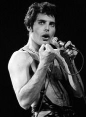

Биография
Фредди Меркьюри (англ. Freddie Mercury, имя при рождении — Фаррух Булсара. Родился 5 сентября 1946 года. Место рождения: Каменный город, Занзибар.
Британский певец парсийского происхождения, автор песен и вокалист рок-группы Queen. Является автором таких хитов группы, как «Bohemian Rhapsody», «Killer Queen», «Seven Seas of Rhye», «Somebody to Love», «We Are the Champions», «Don`t Stop Me Now», «Crazy Little Thing Called Love» и др. Также занимался сольным творчеством.
13 июля 1985 года стало особенным днём для Queen и Фредди — в этот день состоялся концерт Live Aid — грандиозное шоу на стадионе «Уэмбли», где присутствовало 75 тысяч зрителей и много известных исполнителей, таких как Элтон Джон, Пол Маккартни, Дэвид Боуи, Black Sabbath, Стинг, U2 и многие другие (параллельно шоу на «Уэмбли» шёл концерт в Филадельфии). Концерт транслировало телевидение всего мира. Выступление Queen было признано одним из лучших и вернуло им статус эффектной и блестящей рок-группы; в Британии даже выпустили специальную марку с изображением Меркьюри.
В 2002 году Меркьюри занял 58-е место в опросе «100 величайших британцев», организованном компанией Би-би-си. В 2005 году журнал Blender провёл опрос, по результатам которого Фредди занял второе место среди вокалистов (первое среди мужчин). В 2008 году журнал Rolling Stone поставил его на 18-е место в списке «100 величайших вокалистов всех времён по версии журнала Rolling Stone».
Личная жизнь
В начале 1970-х годов у Меркьюри были продолжительные отношения с Мэри Остин, ранее бывшей девушкой Брайана Мэя, благодаря которому он с ней и познакомился. Фредди и Мэри были вместе около семи лет и вместе жили в Западном Кенсингтоне, Лондон. В середине 1970-х годов у певца началась интрижка с исполнительным директором звукозаписывающего лейбла «Elektra Records», и в декабре 1976 года Меркьюри рассказал Остин о своей ориентации, после чего их романтические отношения закончились.
Однажды все переменилось, когда Фредди признался, что должен сообщить ей кое-что очень важное; то, что изменит их отношения навсегда. Мэри поясняет: «Я была немного наивна, и мне потребовалось время, чтоб осознать правду. В итоге он был рад, что сказал мне, что он бисексуал». Мэри решила, что настало время уйти, но он убедил её не уезжать далеко.
В 1985 году у Меркьюри начались отношения с парикмахером Джимом Хаттоном (1949—2010). Они провели вместе последние шесть лет жизни певца. Хаттон заботился о Меркьюри во время болезни и был рядом, когда того не стало. О своих отношениях с музыкантом Хаттон написал книгу под названием «Меркьюри и я» (англ. Mercury and Me).
Однажды все переменилось, когда Фредди признался, что должен сообщить ей кое-что очень важное; то, что изменит их отношения навсегда. Мэри поясняет: «Я была немного наивна, и мне потребовалось время, чтоб осознать правду. В итоге он был рад, что сказал мне, что он бисексуал». Мэри решила, что настало время уйти, но он убедил её не уезжать далеко.
В 1985 году у Меркьюри начались отношения с парикмахером Джимом Хаттоном (1949—2010). Они провели вместе последние шесть лет жизни певца. Хаттон заботился о Меркьюри во время болезни и был рядом, когда того не стало. О своих отношениях с музыкантом Хаттон написал книгу под названием «Меркьюри и я» (англ. Mercury and Me).
Голос
По своей природе голос Меркьюри подпадает под классификацию баритона, хотя он и пел тенором. Диапазон его вокала составлял 37 тонов – это больше 3, но меньше, чем 4 октавы. Хотя оперные баритоны обычно поют в пределах двух октав.
Но тоновый диапазон – не самое главное в голосе. Его характеризуют еще сила и блеск, тембр и окраска, вибрато и обертоны.
Рок-певец часто использовал свое знаменитое "рычащее" пение (гроулинг). Для воспроизводства этих звуков помимо обычных голосовых связок задействуются вентрикулярные складки ("ложные связки"). Аналогичную технику используют якутские, тибетские и тувинские мастера горлового пения.
Фредди обладал высокочастотным вибрато - так называют короткие и быстрые изменения параметров голоса (тембра, силы, высоты). К тому же оно было необычайно изменчивым. Частота голосовых вибраций певца составляла около 7 Гц, хотя характеристика голоса среднестатистического мужчины укладывается в диапазон 5,4-6,9 Герц.
Факты
Меркьюри сделал четыре демозаписи с Майклом Джексоном: две версии «There Must Be More to Life Than This» (одна поётся дуэтом, другая — Майклом Джексоном с несколькими небольшими фразами Меркьюри на бэк-вокале, впоследствии композиция вышла в сольном альбоме Фредди Меркьюри Mr. Bad Guy), «State of Shock» (впоследствии была выпущена группой The Jacksons в альбоме Victory) и «Victory» (подробности об этой записи неизвестны). Сотрудничество так и не состоялось. Официально говорилось о занятости обоих музыкантов.
На концертах Queen Меркьюри использовал микрофон с прикреплённой к нему полуразобранной стойкой. Этот отличительный знак, ставший визитной карточкой певца, сформировался у него в годы первых выступлений в Англии в составе группы Wreckage. На концерте, который состоялся на Рождество 1969 года в школе для девочек «Уэйд Дикон» в Уиднесе, Меркьюри, как обычно, прыгал и вертелся по сцене. Ему надоела тяжёлая микрофонная стойка — он отвинтил у неё основание и «после этого прыгал по сцене в своей всем знакомой манере, сжимая в руке прикреплённый к микрофону „лишний“ трёхфутовый стержень».
Меркьюри в детстве был увлечённым филателистом. Его коллекция выставлялась на филателистских выставках в разных странах.
Меркьюри очень любил кошек, в его особняке в разные годы жило обычно несколько кошек: Оскар, Тиффани, Голиаф, Делайла, Мико, Ромео, Лили. Делайле он посвятил одноимённую песню.
В культуре
Образ Фредди Меркьюри — один из основных в балете Мориса Бежара «Дом священника» (музыка группы Queen и В. А. Моцарта, 1997).
В фильме «Богемская рапсодия» (США, Великобритания, 2018) роль Фредди Меркьюри сыграл актёр Рами Малек. В 2019 году за эту роль он получил кинопремию «Оскар».